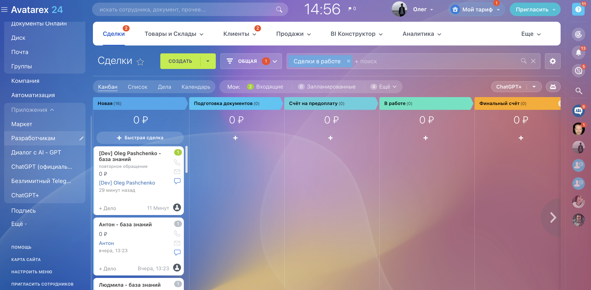
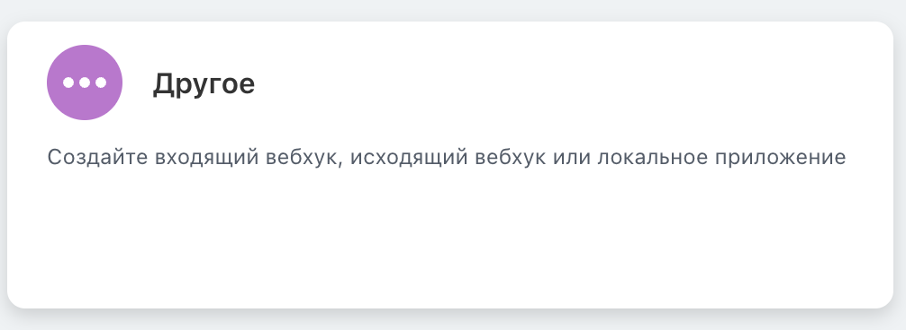
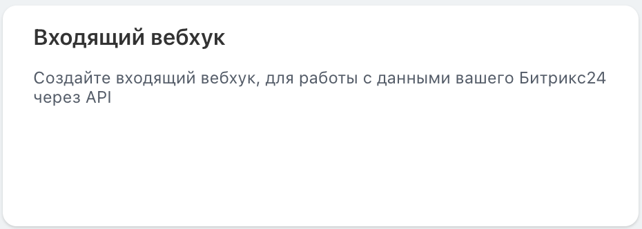
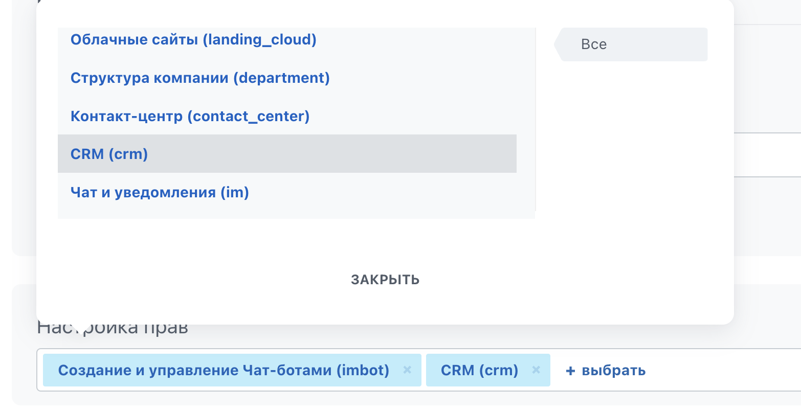
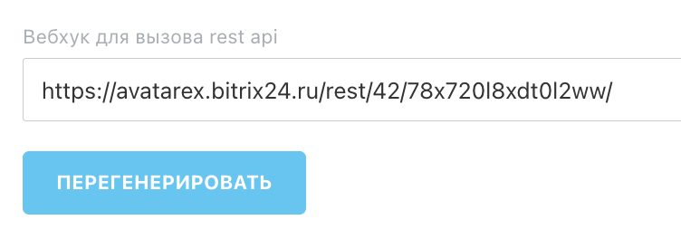

Как связать ваш Bitrix с Avatarex
Зайти в меню Приложения и выбрать раздел разработчикам
 Нажимаем Другое
 Выбираем "Входящий вебхук"
 В настройке прав выбираем "Создание и управление Чат-ботами (imbot)"
 Копируем и вставляем в Avatarex вебхук для вызова rest api
 Сохраняем в Bitrix и в Avatarex
Last modified: 11 февраля 2024